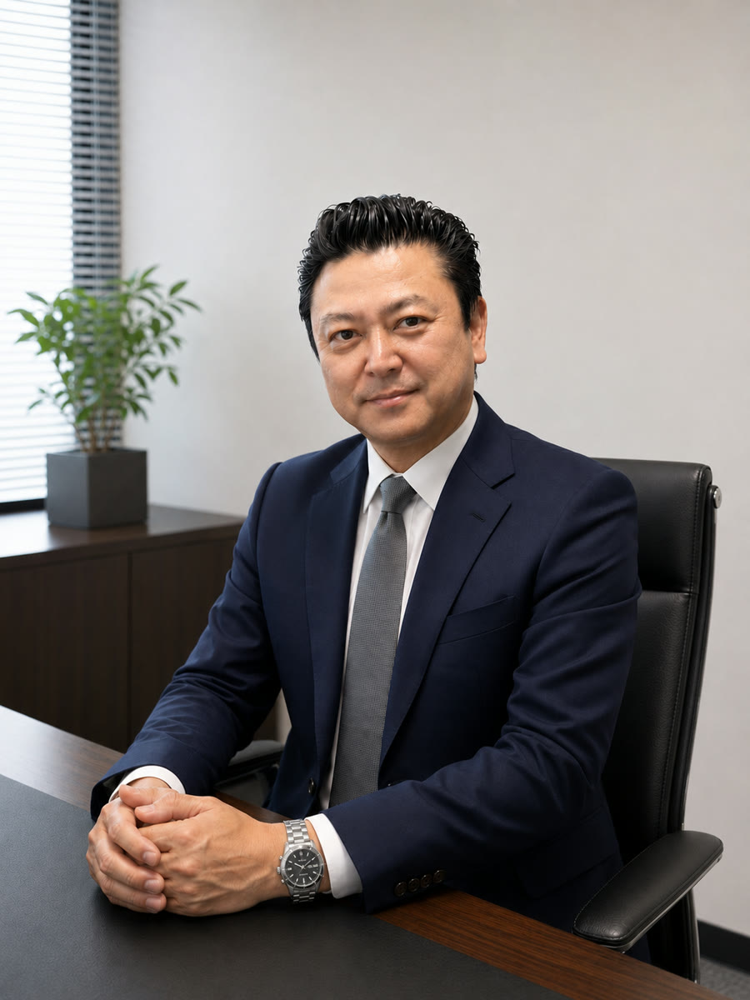

KUTRUCK ＆ TYRE SERVICE
SINCE 1981 — 埼玉・三郷

「トラックに関するあらゆる課題を、ワンストップで解決する」。
それが、私たちＫＵが掲げる揺るぎないビジョンです。
運送事業を原点とする私たちは、お客様のニーズに本気で向き合う中で、整備、タイヤ・用品販売、車両売買へと事業領域を深化させてまいりました。現在では、そのすべてが当社の根幹をなす主力事業として稼働しています。
私たちの真価は、お客様の事業に「いかなる停滞も許さない」という、強靭なサポート体制にあります。
日々の高品質な輸送から、高度な予防整備によるトラブルの未然防止、さらには急な出張タイヤ交換まで。現場の最前線で培った知見を活かし、お客様の円滑な事業運営を先回りしてサポートいたします。
これからの物流業界は、かつてない変革期を迎えます。その中にあっても、皆様からいただいたご恩を忘れることなく、「運ぶ・直す・売る」の全方位でお客様の期待を超えるソリューションを提供し続けます。
皆様のビジネスの未来を支える力強いパートナーとして、当社をぜひご活用ください。
運送・整備・タイヤ・売買のご相談も、採用の応募も。話はそれからだ。